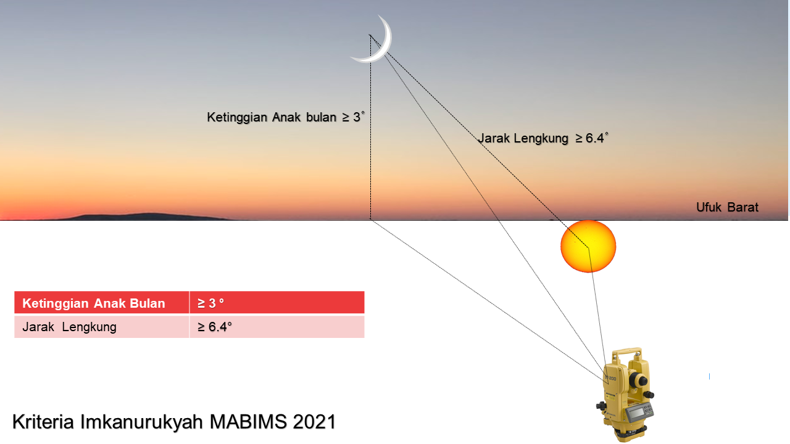

Penanggalan Hijriah di sini mengacu pada kalender Kemenag Indonesia tahun 2025, maka hanya bisa dipakai untuk tahun 2025 (1 Januari s/d 31 Desember).
Kalender Kemenag dibuat berdasarkan kriteria Imkanur Ru'yah seperti di bawah ini
Untuk penetapan bulan-bulan yang ada ibadah khusus, seperti Ramadhan, Syawal, dan Dzulhijjah, harus menunggu sidang itsbat yang bersandar pada Ru'yatul Hilal.
Menurut Madzhab Syafi'i, setiap wilayah menentukan awal bulan Hijriah berdasarkan Ru'yah masing-masing wilayah. Itulah kenapa kita dapati adanya perbedaan tanggal dari satu kalender ke kalender yang lain.
Website simple ini dibuat dengan memakai sistem penanggalan sesuai Ru'yah negara Indonesia.
Jika saudara-saudari mendapati tanggal di website ini berbeda dengan sumber-sumber lain, itu karena kebanyakan kalender online yang ada di internet mengacu pada kalender Ummul Quro, yang dibuat berdasarkan Ru'yah di negara Arab Saudi, sedangkan website ini mengacu pada kalender Kemenag seperti yang telah dijelaskan di atas.
Semoga Allah memberi taufik untuk semuanya.